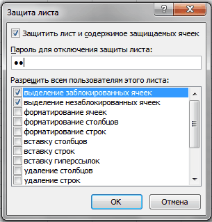

Как защитить лист от пользователя, но не от макроса?
Иногда бывает полезно защитить данные на листе от изменений другими пользователями, но при этом так же надо будет работать с данными на листе из VBA(т.е. вносить изменения с помощью кода). Обычная защита листа, конечно, подходит, хоть и есть небольшой недостаток: надо перед каждым обращением к листу снимать с него защиту, выполнять необходимые действия и защищать заново:
Sub Write_in_ProtectSheet() 'снимаем защиту с листа Worksheets("Лист1").Unprotect 'если лист защищен с паролем 1234: Worksheets("Лист1").Unprotect "1234" 'действия на листе.Например,изменение значения ячейки А1 Cells("A1").Value = "www.excel-vba.ru" 'устанавливаем защиту на лист Worksheets("Лист1").Protect 'если лист был защищен с паролем 1234: Worksheets("Лист1").Protect "1234" End Sub
Но есть метод проще.
Если выполнить ниже приведенную строчку кода, то пользователю невозможно будет изменить данные на листе(кроме тех, которые Вы сами разрешите), однако код VBA(макрос) сможет преспокойно вносить любые изменения, не снимая защиту.
Sub Protect_for_User_Non_for_VBA() ActiveSheet.Protect Password:="1111", UserInterfaceOnly:=True End Sub
|
1 2 3 |
Sub Protect_for_User_Non_for_VBA() ActiveSheet.Protect Password:="1111", UserInterfaceOnly:=True |
Основную роль здесь играет параметр UserInterfaceOnly. Если его установить в True, то это говорит Excel-ю, что коды VBA могут выполнять действия по изменению ячеек, не снимая защиты методом Unprotect. Однако сама защита листа при этом не снимается и вручную изменить данные ячеек, не сняв защиту с листа, невозможно.
Код выше устанавливает такую защиту только на активный лист книги. Но можно указать лист явно(например установить защиту на лист с именем Лист1 в активной книге и лист, идущий вторым по порядку в книге(Sheets(2))):
Sub Protect_for_User_Non_for_VBA() Sheets(2).Protect Password:="1111", UserInterfaceOnly:=True Sheets("Лист1").Protect Password:="1111", UserInterfaceOnly:=True End Sub
|
1 2 3 4 |
Sub Protect_for_User_Non_for_VBA() Sheets(2).Protect Password:="1111", UserInterfaceOnly:=True Sheets("Лист1").Protect Password:="1111", UserInterfaceOnly:=True |
Так же приведенный код можно еще чуть модернизировать и разрешить пользователю помимо изменения ячеек еще и использовать автофильтр:
Sub Protect_for_User_Non_for_VBA() Sheets(2).Protect Password:="1111", UserInterfaceOnly:=True 'на лист "Лист1" поставим защиту и разрешим пользоваться фильтром Sheets("Лист1").Protect Password:="1111", AllowFiltering:=True, UserInterfaceOnly:=True End Sub
Можно разрешить и другие действия(выделение незащищенных ячеек, выделение защищенных ячеек, форматирование ячеек, вставку строк, вставку столбцов и т.д. Чуть подробнее про доступные параметры можно узнать в статье Защита листов и ячеек в MS Excel). А как будет выглядеть строка кода с разрешенными параметрами можно узнать, записав макрорекордером установку защиты листа с нужными параметрами:

После этого получится строка вроде такой:
ActiveSheet.Protect DrawingObjects:=True, Contents:=True, Scenarios:=True _ , AllowInsertingColumns:=True, AllowInsertingRows:=True, AllowFiltering:=True
|
1 2 |
ActiveSheet.Protect DrawingObjects:=True, Contents:=True, Scenarios:=True _ , AllowInsertingColumns:=True, AllowInsertingRows:=True, AllowFiltering:=True |
здесь я разрешил использовать автофильтр( AllowFiltering:=True), вставлять строки( AllowInsertingRows:=True) и столбцы( AllowInsertingColumns:=True).Чтобы добавить возможность изменять данные ячеек только через код VBA, останется добавить параметр UserInterfaceOnly:=True:
ActiveSheet.Protect DrawingObjects:=True, Contents:=True, Scenarios:=True _ , AllowInsertingColumns:=True, AllowInsertingRows:=True, AllowFiltering:=True, UserInterfaceOnly:=True
|
1 2 |
ActiveSheet.Protect DrawingObjects:=True, Contents:=True, Scenarios:=True _ , AllowInsertingColumns:=True, AllowInsertingRows:=True, AllowFiltering:=True, UserInterfaceOnly:=True |
и так же неплохо бы добавить и пароль для снятия защиты, т.к. запись макрорекордером не записывает пароль:
ActiveSheet.Protect DrawingObjects:=True, Contents:=True, Scenarios:=True _ , AllowInsertingColumns:=True, AllowInsertingRows:=True, AllowFiltering:=True, UserInterfaceOnly:=True, Password:="1111"
Этот метод всем хорош, все отлично, но. Параметр UserInterfaceOnly сбрасывается сразу после закрытия книги. Т.е. если установить таким образом защиту на лист и закрыть книгу, то при следующем открытии защиты этой уже не будет - останется лишь стандартная защита. Поэтому, если необходимо такую защиту видеть постоянно, то данный макрос лучше всего прописывать на событие открытия книги(модуль ЭтаКнига(ThisWorkbook)).
Сделать это можно таким кодом:
Private Sub Workbook_Open() Sheets("Лист1").Protect Password:="1111", UserInterfaceOnly:=True End Sub
|
1 2 3 |
Sheets("Лист1").Protect Password:="1111", UserInterfaceOnly:=True |
Этот код сработает только после того, как книга будет открыта. А это значит, чтобы увидеть результат необходимо после записи этого кода в ЭтаКнига сохранить книгу, закрыть её и открыть заново. Тогда в сам момент открытия книги код сработает и установит на "Лист1" правильную защиту.
Часто так же бывает необходимо устанавливать одинаковую защиту на все листы книги. Сделать это можно таким кодом, который так же должен быть размещен в модуле ЭтаКнига(ThisWorkbook):
Private Sub Workbook_Open() Dim wsSh As Object For Each wsSh In Me.Sheets Protect_for_User_Non_for_VBA wsSh Next wsSh End Sub Sub Protect_for_User_Non_for_VBA(wsSh As Worksheet) wsSh.Protect Password:="1111", UserInterfaceOnly:=True End Sub
|
1 2 3 4 5 6 7 8 9 |
Protect_for_User_Non_for_VBA wsSh Sub Protect_for_User_Non_for_VBA(wsSh As Worksheet) |
Плюс во избежание ошибок лучше перед установкой защиты снимать ранее установленную(если она была):
Sub Protect_for_User_Non_for_VBA(wsSh As Worksheet) wsSh.Unrotect "1111" wsSh.Protect Password:="1111", UserInterfaceOnly:=True End Sub
|
1 2 3 4 |
Sub Protect_for_User_Non_for_VBA(wsSh As Worksheet) |
Ну и если надо такую защиту установить только на конкретные листы, то убираем цикл и вызываем процедуру только для нужных листов. Если известны их имена, то можно прибегнуть к использованию массивов:
Private Sub Workbook_Open() Dim arr, sSh arr = Array("Отчет", "База", "Бланк") For Each sSh in arr Protect_for_User_Non_for_VBA Me.Sheets(sSh) Next End Sub Sub Protect_for_User_Non_for_VBA(wsSh As Worksheet) wsSh.Protect Password:="1111", AllowFiltering:=True, UserInterfaceOnly:=True End Sub
Для применения в своих задачах в данном коде необходимо лишь изменить(добавить, удалить, вписать другие имена) имена листов в этой строке: Array("Отчет", "База", "Бланк")
Примечание: Метод защиты через UsefInterface всем хорош, но есть одно ограничение: метод невозможно использовать в книге с общим доступом(Рецензирование -Доступ к книге), т.к. при общем доступе существуют ограничения, среди которых и такое, которое запрещает изменять параметры защиты для книги в общем доступе.